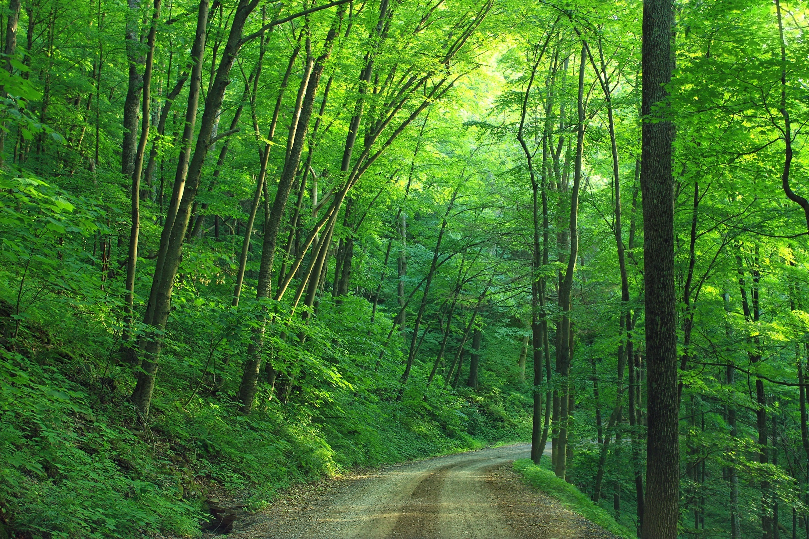

Mis Hobbies y Pasiones
Desde siempre, he sido una persona activa y creativa, encontrando satisfacción en diversas actividades que van desde el deporte hasta la programación. Cada uno de mis hobbies representa un aspecto importante de mi personalidad y me permite explorar diferentes facetas de mi vida.
1. Fúbol

Me encanta jugar y ver partidos de futbol, La emoción de un partido y el tiempo que pasas con los amigos son lo que más se disfruta. Me gusta la estrategia del juego y la mejora a lo largo del partido por parte de los equipos. Además, ver partidos de la liga de campeones donde juega el Real Madrid es uno de mis mayores gustos
2. Gimnasio

Ir al gimnasio es una parte fundamental de mi vida. Me gustan los entrenamientos de fuerza y acondicionamiento físico. Disfruto mi rutina diaria, aprender sobre biomecánica y nutrición para optimizar mi rendimiento, y superar mis propios límites. Mís allá de los beneficios físicos, el gimnasio es también un espacio de disciplina y enfoque mental, donde me desconecto del mundo y me concentro en mis objetivos personales.
3. Naturaleza
Cuando tengo la oportunidad, me gusta salir a caminar por la naturaleza, explorar montañas y respirar aire fresco. El senderismo me permite desconectarme del estrés diario y disfrutar del paisaje, además de ser un excelente complemento para mantenerme en forma.
4. Tecnología y Programación

La tecnología me fascina, y en mis tiempos libres me gusta experimentar con software, aprender sobre programación y explorar nuevas herramientas digitales. Ya sea desarrollando pequeños proyectos o simplemente curioseando sobre avances tecnológicos, siempre encuentro algo interesante en este mundo.